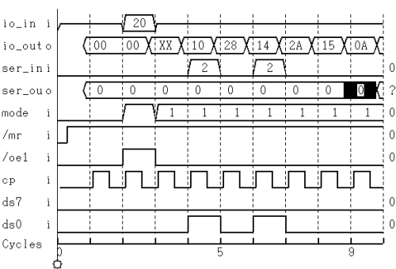

Display of the groups of pins
The Timing Diagram displays a group of input and output pins on a single line, together with the numeric value of the group as a hexadecimal number. See the groups io_in and io_out in the figure below.
If a group of output pins is set to 'Do not Care', the Timing Diagram window displays a value of 'X' for that group of pins.

Functional changes
- Introduced before SmarTest 6.3.2